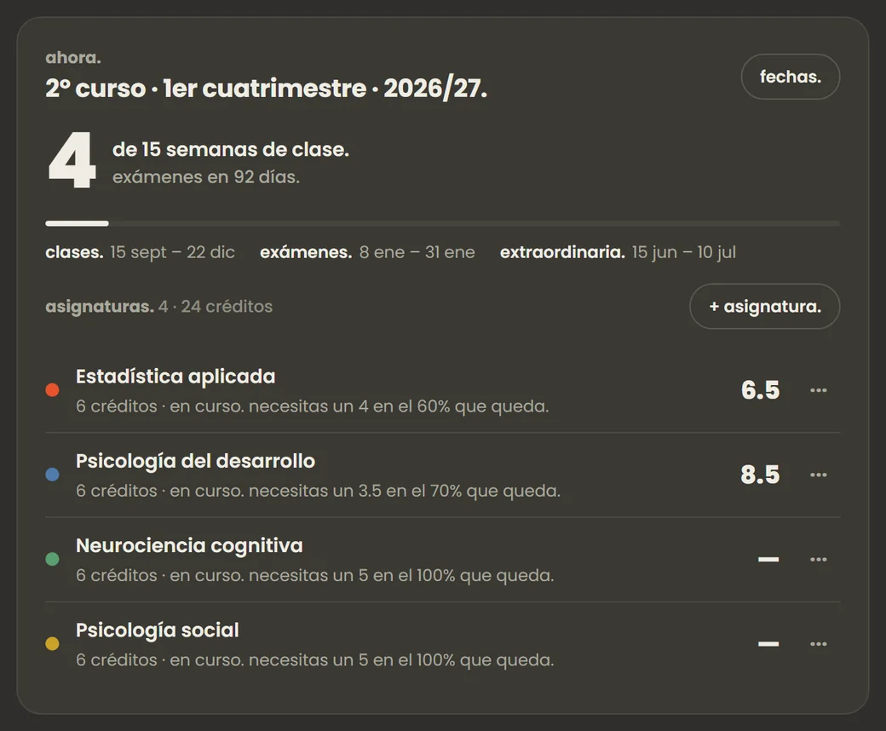

01.
bitácora para universitarios y estudiantes.
Dos modos, según lo que estudies. Estudios, para cualquiera: asignaturas, horario, exámenes y entregas. Universidad, si estás en la carrera: tu grado entero por cuatrimestres, con créditos superados, media del expediente, en qué semana estás y cuánto falta para los exámenes.
- Te dice qué nota necesitas en lo que queda para aprobar cada asignatura.
- Horario, exámenes y entregas, en tu calendario y tu planificador.
- ¿Bachillerato, FP u oposiciones? Estudios te sirve igual; Universidad solo se activa si la quieres.
